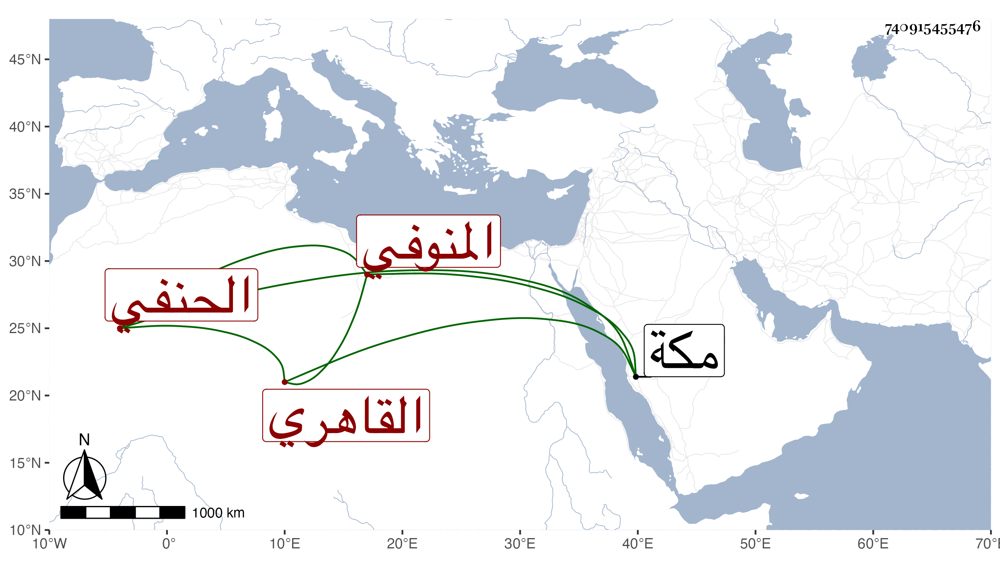

0902Sakhawi.DawLamic.ITO20230111-ara1.EIS1600.740915455476
Biography ID: 740915455476
824
علي بن عبد الغني النور المنوفي ثم القاهري الحنفي ممن له انتماء للزين خالد الذي كان شيخ سعيد السعداء اشتغل عند الصلاح الطرابلسي وغيره وتميز وناب عن القاضي ناصر الدين الأخميمي وأجلسه بجامع الفكاهين وله أخ اسمه أحمد يجلس عنده شاهدا بل هو كاتب في الوراقين لوفاء بن الجغينماتي وكان ممن فر لمكة في أثناء سنة سبع وتسعين فحج ثم رجع ولا تميز عنده .
